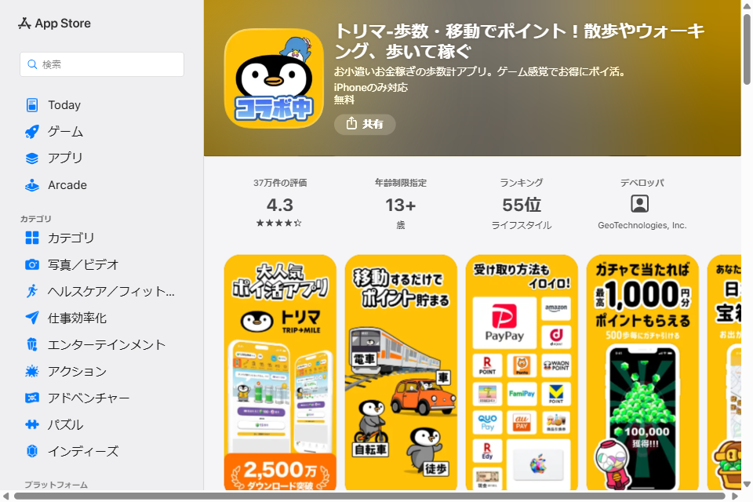
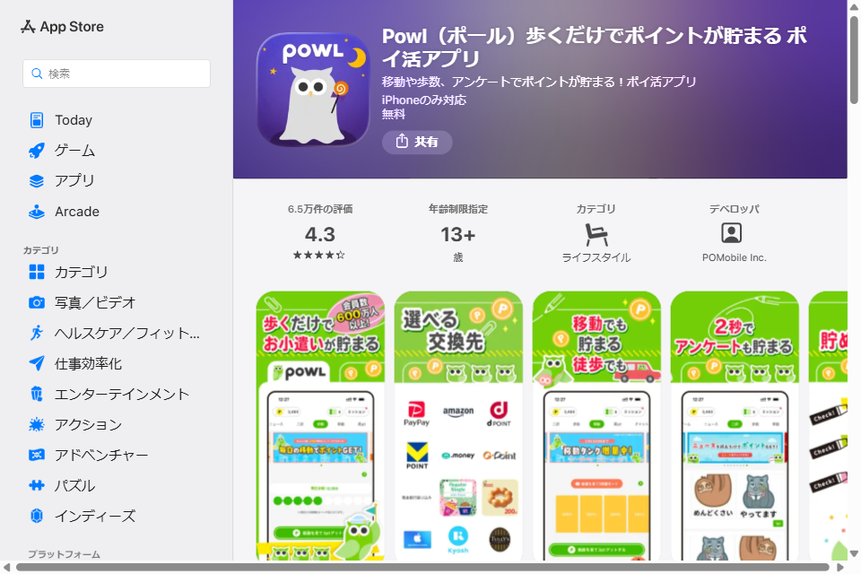

通勤・通学、買い物、散歩——普段何気なく歩いているその移動距離を、そのままポイントに変えられるアプリがあります。スマートフォンを持って移動するだけなので、特別な作業も初期費用も必要ありません。この記事では、数ある「歩いて稼ぐ」アプリの中でも特に利用者が多い「トリマ」と「POWL（ポール）」を取り上げ、公式サイト・公式アプリの情報をもとに、稼ぎ方からポイントを貯めるコツ、招待コードの特典まで詳しく解説します。
「歩いて稼ぐ」アプリの仕組み
トリマ・POWLのような位置情報連動型のポイ活アプリは、スマートフォンのGPSやヘルスケア機能と連携し、ユーザーの歩数や移動距離を計測します。アプリ運営会社は、匿名化した移動データを地図情報の整備や商圏分析などに活用しており、その対価の一部がユーザーへのポイント還元に充てられる仕組みです。歩くだけで完結するもの、アンケートやゲーム、広告の利用と組み合わせて貯めるものなど、稼ぎ方は1つではありません。
トリマ（TRIP-MILE）とは
トリマ
2,500万ダウンロード突破／評価4.3（37万件・App Store）地図情報サービス大手のジオテクノロジーズ株式会社が運営するポイ活アプリです。徒歩・自転車・車・電車など移動手段を問わず、移動するだけでマイルが貯まります。公式サイトによると、2026年5月時点で2,500万ダウンロードを突破しています。
- 徒歩・自転車・車・電車での移動に応じてマイルが貯まる
- 移動しない日でも、アンケート・ゲーム/クイズ・買い物・ガチャ/スロットでマイルを獲得できる
- 「トリマソリティア」「トリマナンプレ」など連携ゲームアプリでも追加でマイルを貯められる
- 歩数・消費カロリー・目標達成度が自動記録され、ヘルスケア（Apple）／ヘルスコネクト（Google）と連携可能
- 貯めたマイルは現金・Amazonギフト券・dポイント・Vポイントなどに交換、寄付も選べる
招待コード：dsDWHRm-n（初回登録時の招待コード入力画面でご入力ください）

POWL（ポール）とは
POWL（ポール）
会員数700万人突破／評価4.3（6.5万件・App Store）POMobile Inc.が運営するポイ活アプリです。公式サイトでは会員数700万人突破・運営実績10年以上・JIPC（日本インターネットポイント協議会）加盟サイトであることが紹介されています。広告の利用でポイントが貯まるポイントサイトの機能に加えて、アプリ版では「移動や歩数、アンケートでポイントがもっと貯まる」ことが特長として案内されています。
- 歩数・移動距離に応じてポイントが貯まる
- 2択形式のかんたんアンケートに答えてポイントを獲得できる
- ゲームで遊びながらポイントを貯められる
- クレジットカード発行や口座開設などの広告案件を利用すると高ポイントを獲得できる
- 貯めたポイントは最低50円から現金・電子マネー・ギフト券などに交換可能
招待コード：PF9E9F4DT3Q（アプリ内の「友達招待コード入力はこちら」から入力してください）

ポイントを貯めるコツ
- 位置情報の取得を「常に許可」にする：バックグラウンドでの位置情報取得を許可しておかないと、移動中のポイントが正しく記録されないことがあります
- 毎日アプリを開く習慣をつける：ログインボーナスや日替わりのポイント獲得コンテンツが用意されていることが多く、開くだけでも差がつきます
- 移動系と非移動系を組み合わせる：雨の日や外出しない日はアンケート・ゲーム・ガチャなど、移動以外の貯め方を併用すると効率が落ちません
- 高ポイント案件は内容をよく確認してから利用する：クレジットカード発行や口座開設などの広告案件は高単価ですが、本当に必要なサービスかどうかを見極めてから申し込みましょう
- ポイントの有効期限・交換手数料を確認する：交換先によって手数料や最低交換ポイントが異なるため、事前にチェックしておくと損をしません
トリマとPOWLは併用できる？
どちらも「歩く・移動する」ことでポイントが貯まる仕組みのため、両方のアプリを同時にインストールしても基本的に問題なく併用できます。同じ移動に対してそれぞれのアプリから個別にポイントが加算される仕組みなので、1回の外出でも二重にポイ活ができるのが魅力です。ただし、位置情報を常時取得するアプリを複数起動しておくとバッテリー消費が普段より早くなる傾向があるため、モバイルバッテリーを用意しておくと安心です。
始める前に知っておきたい注意点
- いずれも位置情報を利用するアプリのため、取得したデータがどのように扱われるかをプライバシーポリシーで確認しておきましょう
- 「移動するだけで高額報酬」といった誇張された紹介には注意し、実際の還元率や交換先は公式情報で確認してから利用しましょう
- 広告案件（クレジットカード発行・口座開設など）を利用する場合は、年会費や解約条件も事前にチェックしてください
- ポイ活で得た収入も、他の副業と同じく所得税の対象になり得ます。まとまった金額になってきたら副業の確定申告・税金の基礎知識もあわせて確認しておきましょう
上記のトリマ・POWLへのリンクには友達紹介プログラムによる招待リンク・招待コードが含まれています。リンクや招待コード経由でご登録された場合、当サイト運営者に紹介特典（ポイント）が付与されることがありますが、読者の方の登録・利用条件が不利になることはありません。紹介する内容は各サービスの公式サイト・公式アプリを確認のうえ、編集方針に基づき中立的に作成しています。